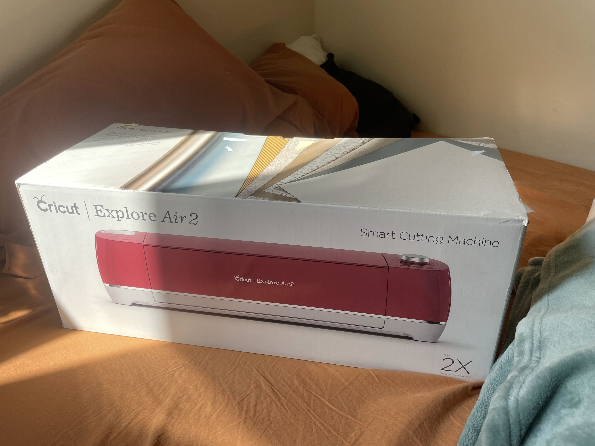
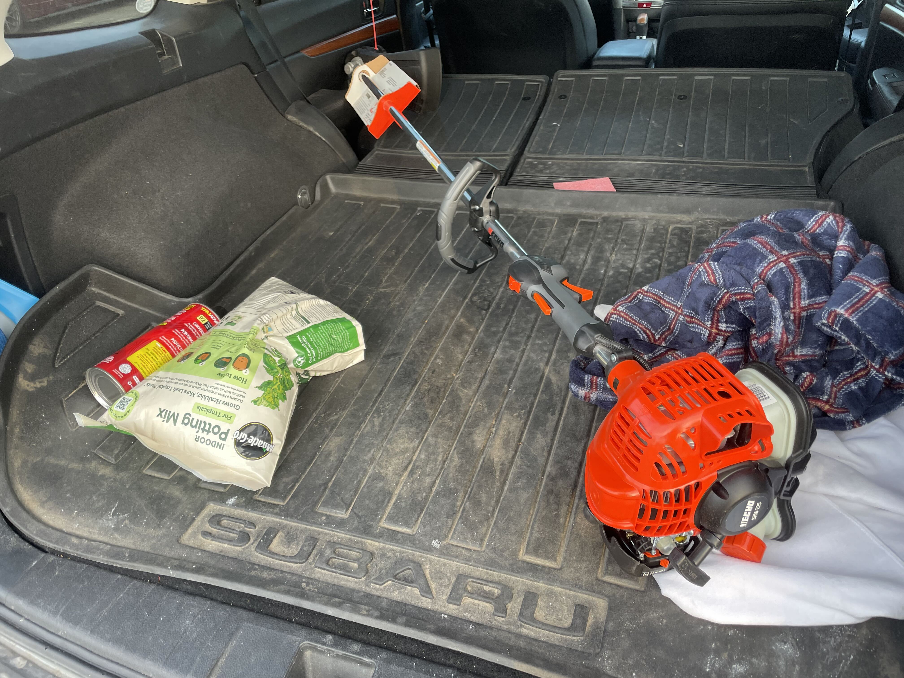
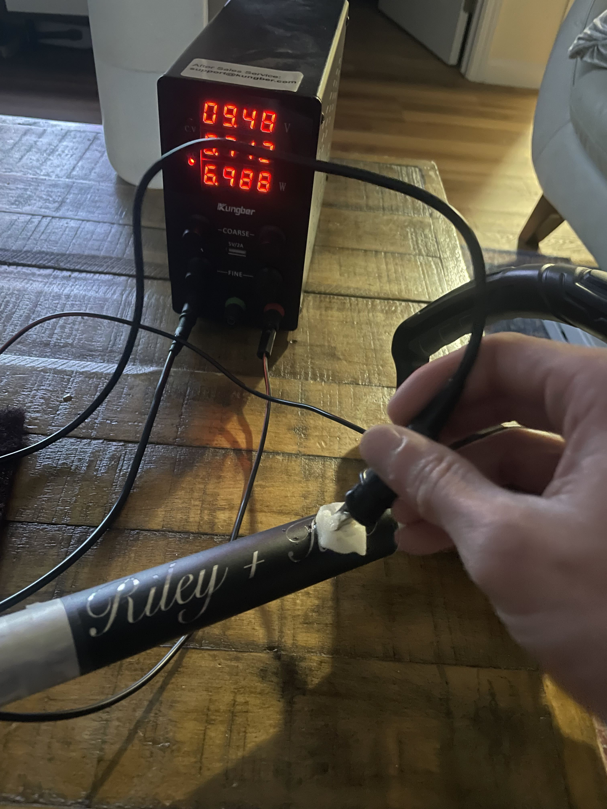
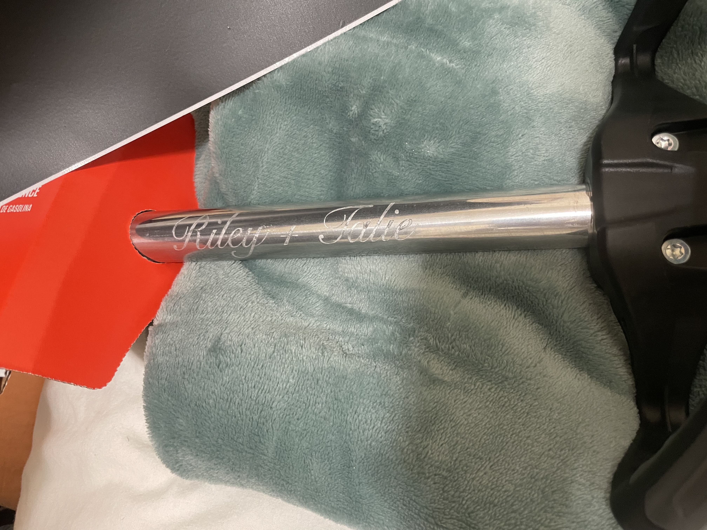
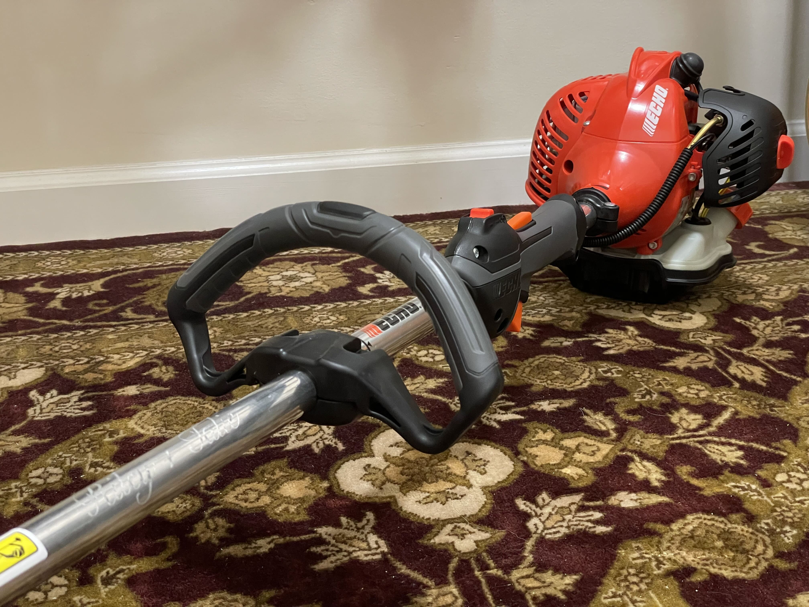
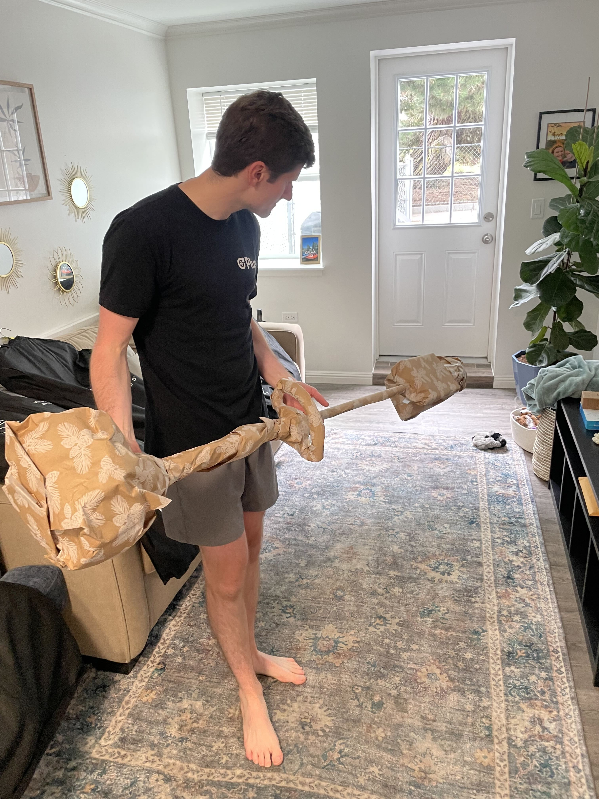
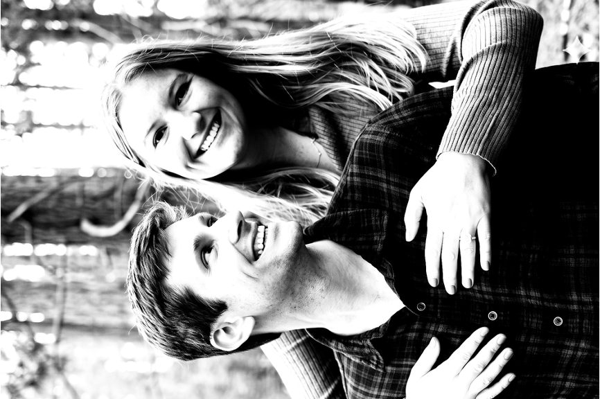
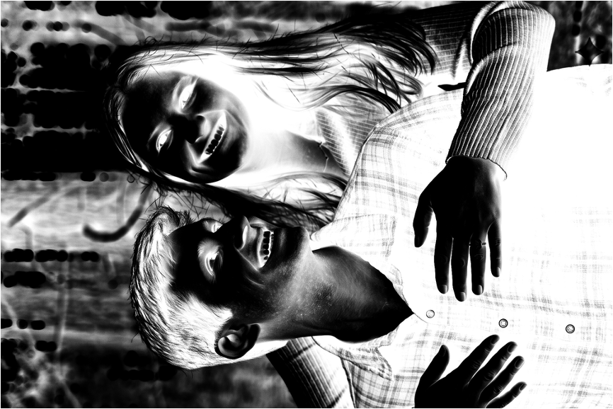
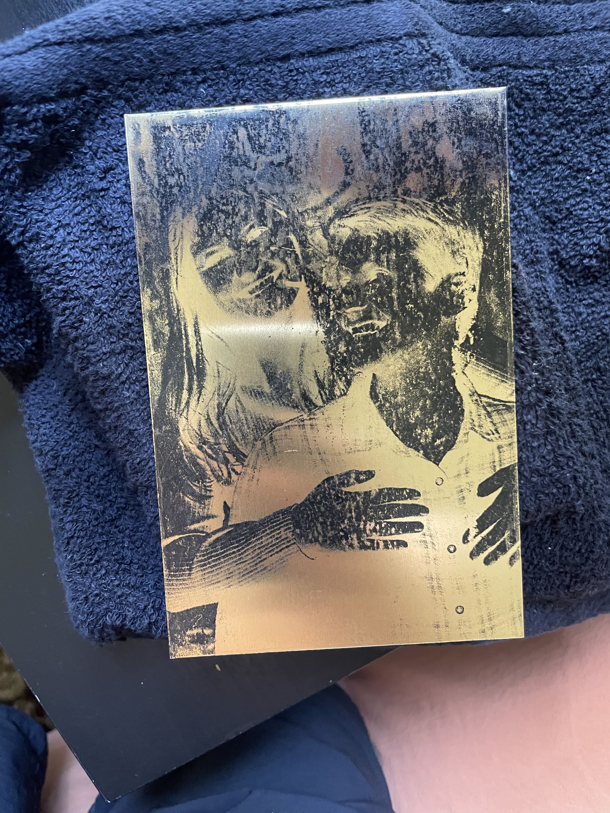
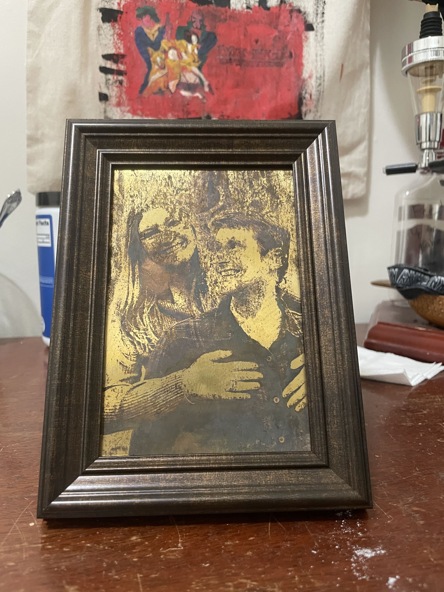

Metal Etching Trials
I've always had an interest in items made of stone, marble, and metal. Choosing to use these forms of media for your art is choosing to work with a much more difficult process with the reward of making something much more permanent in life. I found quite a few ways to make art with metal etchant and I wanted to incorporate it in gifts to my friends. I identified a few ways to do this. The two easiest methods I found were electro-etching and acid etching.
electro-etching
Electro-etching is a very easy way to etch to metal. In fact, it happens all the time unintentionally in nature. The basic process occurs when one metal has an eletric potential over another, causing electrons and ions to want to move from one to another. One metal will act as an anode and give up ions, thus becoming pitted and 'etched'. The other will be the cathode. This occurs in batteries, in metal plating processes, and in natural galvanic corrosion. In fact electro-etching sometimes is even galled galv-etching.
I was super excited to try this myself. For my buddies wedding, I decided I wanted to gift him a weed-whacker with him and his soon to be wife's name engraved on the handle.
I first needed to get a stensil made of their names. I used a Cricut vinyl cutter to cut a sticker to act as my stencil. The cricut is incredibly easy to use and this was complete in no time.

Next I had to purchase the ECHO 21.2cc Gas 2-Stroke Straight Shaft String Trimmer for $279 from HomeDepot.

Finally, using a cheap power supply, a ball of cotton, and a solution of baking soda and salt, I was easily able to begin etching the name in to the metal. I aimed to engrave about 1 minute on each area the cotton ball covered. The process makes an audible crackling noise and I dunked the cotton swab every minute to keep the solution on the area. After 10 minutes I decided I was done and removed the vinyl stencil.

The results turned out amazing! I couldn't believe how easily this project went. Riley loves the string trimmer, despite gas engine lawn care equipment being banned in San Francisco.



Acid etching with ferric chloride
Acid etching with ferric chloride is another method to etch metal. This process involves applying a solution of ferric chloride to the metal surface, which reacts with the metal to create an etched pattern. It is commonly used for creating at home PCB layouts. I will be using this to create a piece of art also for Riley's wedding
I first needed a mask that will be applied to the metal. A mask could be anything from a vinyl sticker, to sharpie marker drawn directly to the metal. I will be using a special technique that involves re-vaporizing laser printer ink.
This technique involves printing the design on a piece of paper using a laser printer, then transferring the ink to the metal surface by applying heat and pressure. The transferred ink acts as a mask, protecting the areas where the metal should not be etched.
So I first made a pure black and white (no grey) image of my friends Riley and Talie from my favorite photo of them. This way the software uses small dots of black and white to mimick the colors grey in between, called dithering. I then flipped the image colors in order to create the mask

This image was printed onto sticker paper with the sticker removed. The slippery side will allow the ink to jump off when heated

Using an iron on Linen setting, I heat pressed the printed image onto my plate of brass. Some of the ink did not fully transfer, and I filled in other areas I wanted to mask with a sharpie.

Finally I soaked the brass plate in a solution of ferric chloride for an hour, with frequent shaking to keep the bare areas exposed. The final result was better than I expeted!
